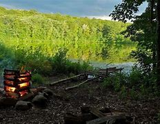

Explore the Great Outdoors
Discover the beauty of nature at our camping site. Whether you're an experienced camper or a first-timer, we have something for everyone. At Our Camping Site, we believe that nature has something to offer everyone. Whether you’re an experienced camper seeking rugged adventures or a first-timer looking for a tranquil escape, our campgrounds provide the perfect backdrop for your outdoor journey. From lush forests to serene lakeshores, our camping sites span a variety of landscapes. Choose your ideal setting and immerse yourself in nature. We cater to different preferences. Whether you prefer primitive camping or need modern amenities like showers and electricity, we’ve got you covered. Hiking trails, fishing spots, stargazing areas—our sites offer activities for every interest. Explore the wilderness or simply unwind by the campfire.
